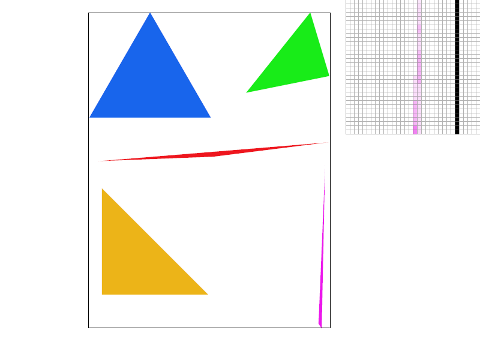
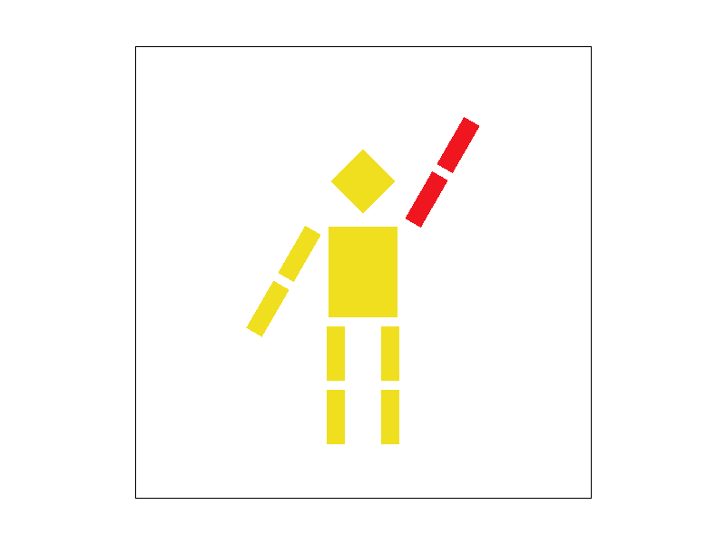
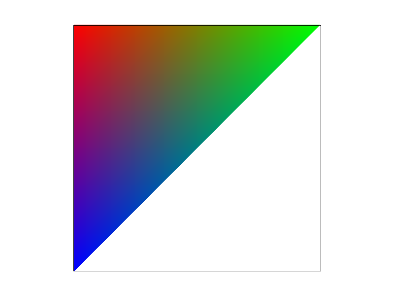
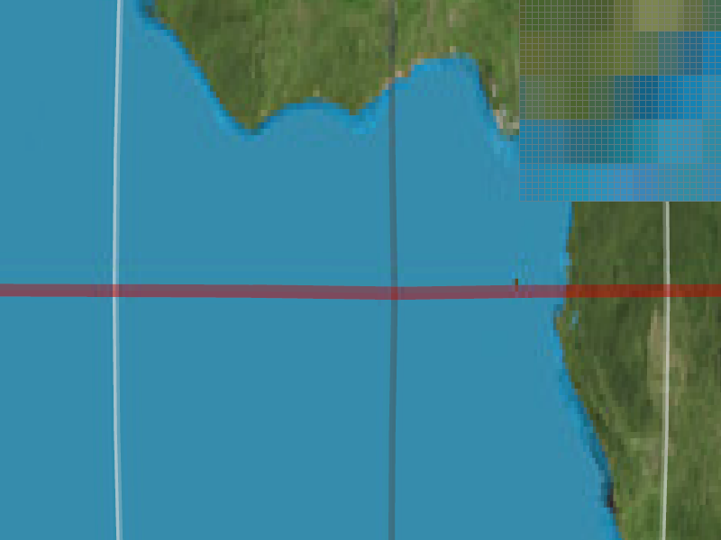
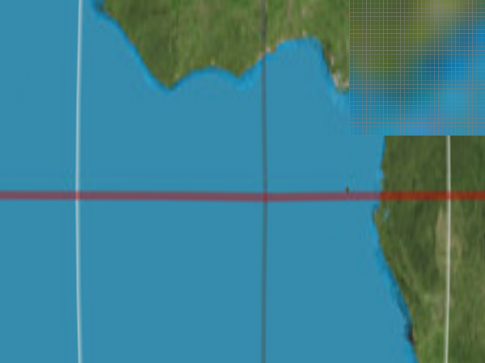
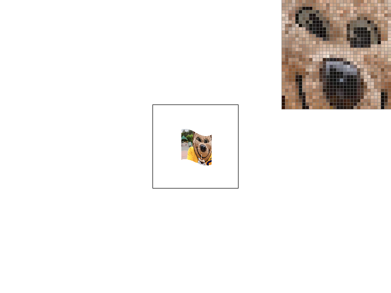
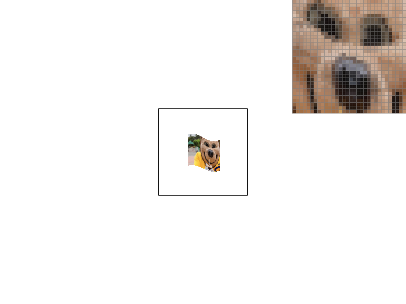

Overview
In this project, we implemented a rasterizer capable of taking SVG files as input and rendering single color, color-interpolated, and textured triangles, as well as handling vector transforms. The rasterizer also can antialias the rendered images using supersampling, pixel sampling, and mipmap level sampling. In writing this rasterizer, we've learned several interesting and useful topics, including barycentric coordinates and how they can be used for triangular interpolation, how the rasterization pipeline is altered when supersampling is implemented, and how points on a texture are mapped to points in screen space and how that process can be used to reduce aliasing.
Section I: Rasterization
Part 1: Rasterizing single-color triangles
Before we rasterize anything, we first check if the vertices 0-1-2 form a counter-clockwise angle (from https://algs4.cs.princeton.edu/91primitives/). If they do not, we swap vertices 0 and 1 to make sure they do. This standardization ensures that the three line tests we perform later work properly to determine if a point is located inside the triangle.
After the vertices are swapped (or not, if they were already counter-clockwise), we define a bounding box using the extremes of the x and y coordinates, finding the min and max of each, rounded to appropriate integer values. This way, we can iterate only over the pixels in this box when rasterizing the triangle, which is much more efficient than iterating over all pixels on screen.
We then iterate over all pixels in the bounding box and use line tests as described in lecture to check if they are in the triangle defined by the vertices. Since our for loops iterate between whole-number coordinates, the points we iterate over are actually the bottom-left corners of each pixel, so we add 0.5 to both the x and y values to find the center of the pixel, and test that point if it is still within the bounding box. If it is, then we call fill_pixel() to render the pixel to the screen.

Part 2: Antialiasing triangles
For each pixel, the supersampling algorithm checks some number of evenly-distributed points to see if they are within the triangle. The precise coordinates of the subpixels are calculated by taking the square root of the sampling rate (assumed here to be either 1, 4, 9, or 16) and using the reciprocal of the result to find the distance between adjacent subpixels. Subpixels are arranged in a square and are counted from left to right, top to bottom. Modular arithmetic is used to sample in the appropriate coordinates for the nth subpixel.
Because supersampling averages several samples per pixel, some modifications to the rasterization pipeline are necessary when the sample rate is greater than 1. Instead of calling fill_pixel() directly, the rasterizer calls fill_supersample(), which writes the sampled color to the supersample buffer, which has size length * width * sample_rate. Then, in order to draw the appropriate color to the screen, we use resolve_to_framebuffer() to take the average color over all samples in a given pixel, and then call fill_pixel() from there. Because RGB values are square roots of the color values they represent, we take the average of the squared RGB values and square root the result to find the average color of the samples. The resulting image blurs the edges of the triangles slightly and reduces aliasing by allowing representation of if a pixel is mostly inside or outide the triangle, rather than reducing it to an all-or-nothing representation. Supersampling is useful for precisely this reason.
|
|
|
|

|
Above are renders of basic/test4.svg at different supersampling rates. At higher rates, the sharp magenta triangle appears smoother, while it is discontinuous without supersampling. This is because supersampling allows the renderer to better capture when the triangle passes through the pixel, since more samples are taken. Without supersampling, even though the triangle passes through the pixel, it does not pass through its exact center, so the pixel is uncolored.
Part 3: Transforms
Here we have C-3PO waving at Han Solo (out of frame) to celebrate Han's return in The Force Awakens. This simplified render of C-3PO grants him greater range of motion than he may have had originally.
Section II: Sampling
Part 4: Barycentric coordinates
Barycentric coordinates are a way to express the position of a point relative to the vertices of a triangle that contains it. A point in barycentric coordinates is expressed using three numbers a, b, and c, that sum to 1 and correspond to the three vertices of a triangle, A, B, and C (which are Cartesian coordinates). The Cartesian coordinates of a point P in a triangle ABC are expressed as the linear combination P = aA + bB + cC. The coefficients a, b, and c can be thought of as how close the point is to that vertex; 1 means the point is the vertex, while 0 means the point is on the side of the triangle opposite the vertex. They also represent the proportional area of the triangle formed by P and the other two vertices not corresponding to a particular coefficient.
Barycentric coordinates allow us to smoothly interpolate between three points (as opposed to just two with linear interpolation), which is especially useful for rendering color gradients in triangles. Just as the coefficients a, b, and c express a continuum of points in 2D space, they can also be used to express a continuum of other properties of the three vertices.

Part 5: "Pixel sampling" for texture mapping
Pixel sampling is a way to render 2D textures into 3D space. Applying textures is relatively trivial when the target space matches that of the original texture; a 1-to-1 mapping from texture to target exists and can be performed to complete the operation. Pixel sampling is typically used when the texture must be upscaled, or rendered larger than it actually is. As we render points to the screen, we find the point in the texture space that corresponds to the screen space and sample around that point to determine what color to draw to the screen.
This rasterizer incorporates two methods of pixel sampling. Nearest-neighbors pixel sampling finds the point P in texture space corresponding to the screen point to be rendered and just renders the color of the nearest texel (texture pixel to the screen. This is computationally simple, but the result appears blocky. Alternatively, bilinear sampling performs three linear color interpolations between the four closest texels to P and renders that, which results in a smoother, blurry-looking image.

|

|
|

|

|
The above screenshots illustrate the difference between nearest sampling and bilinear sampling. While nearest sampling results in blocks of color, bilinear sampling creates a smoother image. This effect is only visible when the texture is upscaled and the sampling frequency is greater than the texture frequency.
Part 6: "Level sampling" with mipmaps for texture mapping
Level sampling is a way to render textures at differing resolutions using mipmaps, which are prerendered versions of textures at progressively lower resolutions. If a high-resolution texture is rendered to a small screen space, aliasing will generally occur. Mipmaps address this issue by shrinking the texture to be rendered, so that the mapping approaches 1-to-1. The level of mipmap to be used depends on the size of the render space. When rendering the screen point (x,y), we find the corresponding texture point (u,v) and compare it to the texture points of (x+1, y) and (x, y+1). The greater the distance between these points in texture space, the higher the mipmap level (lower resolution) to be used, since they are always one pixel apart in screen space.
This rasterizer can switch between three methods of level sampling. Zero sampling always samples from the 0th mipmpap, which is the original resolution of the image. Nearest level sampling calculates the appropriate mipmap level (which may not be an integer) using formulas discussed in class, then rounds to the nearest integer and samples from that mipmap. Linear level sampling takes the unrounded number and uses it to return a weighted combination of samples from the mipmap levels above and below that number.
In general, methods which offer greater antialiasing power tend to require more memory and take more time. Bilinear pixel sampling has this relationship to nearest pixel sampling regardless of zoom level. Level sampling requires more memory and time at high zoom levels but takes less when zoomed out, since a lower-resolution mipmap is applied instead of the full texture. However, this effect is not significantly noticeable compared to the effect at high zoom.
|

|
|
|

|
|